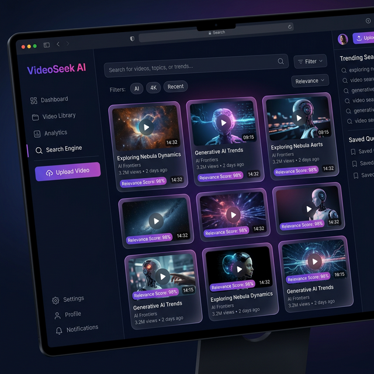

Upload a video or paste a YouTube link. Our AI transcribes every word, analyzes every frame, and lets you search through both — instantly.

Capabilities
Six AI-powered capabilities that let you find exactly what you're looking for in any video.
Automatically transcribe spoken words with OpenAI's state-of-the-art Whisper model. Supports 99+ languages with word-level timestamps.
Describe what you see in plain English. CLIP embeds each frame so you can search visually — "a cat sitting on a desk" instantly finds it.
Blazing-fast similarity search across thousands of embeddings. Query results return in under one second, even on large videos.
Go beyond keyword matching. Sentence-transformers understand context and meaning, finding segments that match your intent — not just words.
Click any result and jump directly to that moment. Works with local video files and YouTube embeds with precise timestamp linking.
Extend your search with Twelve Labs' Marengo model for cross-modal understanding — visual, audio, text-in-video, and logo detection.
Workflow
From video upload to instant search results — four simple steps.
Drag & drop a file or paste a YouTube URL
Whisper transcribes, CLIP embeds every frame
Type a query — visual, transcript, or multimodal
Jump to exact timestamps with one click
Applications
From content creators to researchers — VideoSeek AI saves hours of manual scrubbing.
Search a 2-hour lecture for the exact moment the professor explains "gradient descent" — skip straight to it.
Find specific quotes, on-screen graphics, or b-roll footage across hours of interview recordings.
Quickly locate highlight-worthy moments in raw footage to create clips, reels, and compilations.
Search surveillance footage by visual description — "person carrying a red bag" — without watching hours of tapes.
Get Started
VideoSeek AI runs locally on your machine. No data leaves your environment. Open-source, private, and free.